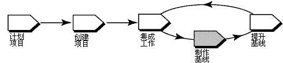

概述
下图说明管理 UCM 项目的工作流程。此工具向导中讨论了加阴影的区域。

在 Rational ClearCase UCM 中，基线是一种通常代表组件的稳定配置的对象。基线为组件中的每个元素确定多个活动和一个版本，实际上充当组件的版本。
随着开发人员将工作交付到集成流，项目经理为项目的集成生成新的基线，或生成合并更改的共享工作空间。然后开发人员可以重新定基为新的基线，并始终可以获悉项目中的最新更改。
此工具向导在运行 Microsoft Windows 时适用。
术语
基线类型
递增基线是由 ClearCase 创建的基线，创建方法是记录上一个完全基线和自上一个完全基线创建以来更改的那些版本。
完全基线也是由 ClearCase 创建的基线，创建方法是记录组件的根目录下的所有版本。通常，创建递增基线耗时较短。但是，ClearCase 查找完全基线的内容耗时较短。
可遵循以下这些步骤来创建基线：
在集成流被锁定时，无法向其交付新的工作，从而确保了一个可从中创建基线的稳定配置。
-
从 Windows 任务栏，选择开始 > 程序 > Rational Software > Rational ClearCase > Project Explorer。
-
从 Project Explorer 中，找到并选择项目的集成流。
-
单击文件 > 属性以显示集成流的属性表。
-
单击锁定选项卡。
-
单击已锁定然后单击确定。
-
从 Project Explorer 中，找到并选择项目的集成流。
-
单击工具 > 创建基线。出现“创建基线”对话框。
该描述性信息包括基线的名称、要创建的基线的类型、要为它们创建基线的组件、要使用的视图和流信息。
-
在基线名称框中输入名称。缺省情况下，ClearCase 通过将日期追加到项目名称来命名基线。
-
选择递增或完全作为要创建的基线的类型。
-
通过指定项目的集成视图（即附加到项目的集成流的视图）之一，来为基线选择视图环境。
-
指定您要为之创建基线的组件。ClearCase 自动将唯一标识追加到每条基线，以帮助区分与各个组件相关联的基线。
 有关更多信息，请参阅 ClearCase 联机帮助中标题为
ClearCase Component Tree Browser 的主题。 有关更多信息，请参阅 ClearCase 联机帮助中标题为
ClearCase Component Tree Browser 的主题。
-
从 Project Explorer 中，找到并选择项目的集成流。
-
单击文件 > 属性以显示集成流的属性表。
-
单击锁定选项卡。
-
单击解锁，然后单击确定。
有关更多信息，请参阅以下 ClearCase
联机帮助主题：
-
About baselines
-
Making a baseline
|